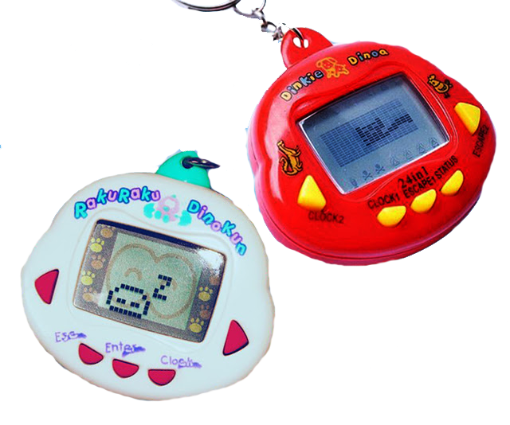

Bichinho Virtual
R$1300
Um animal de estimação virtual, digital ou artificial,[1] ou simulação de criação de animais de estimação)
é um tipo de companheiro humano artificial. Eles geralmente são mantidos para companheirismo ou
diversão. As pessoas podem manter um animal de estimação digital em vez de um animal de estimação
real. Cyberpet e Tamagotchi foram alguns dos primeiros animais de estimação digitais populares.